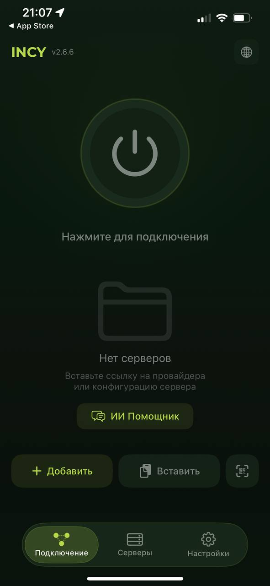
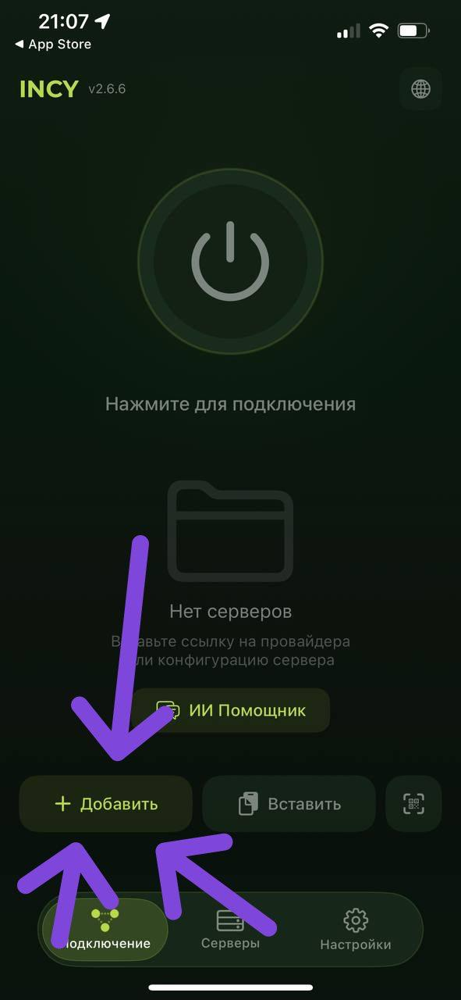
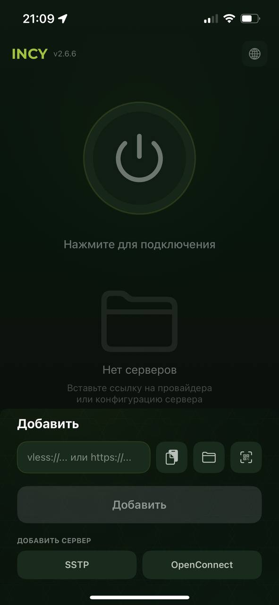
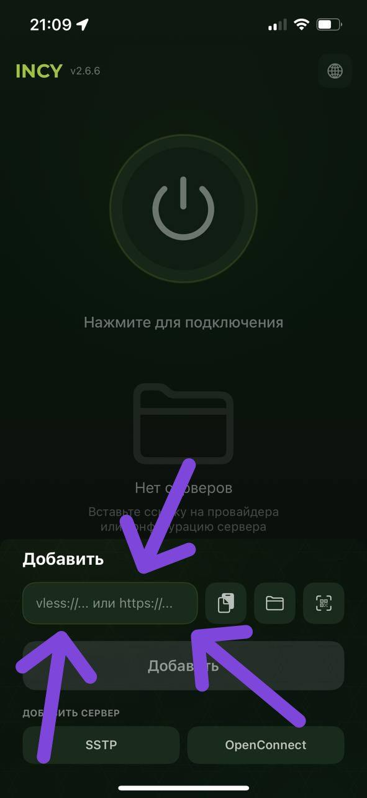
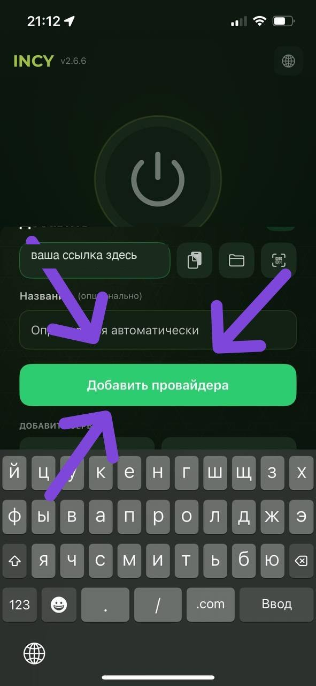
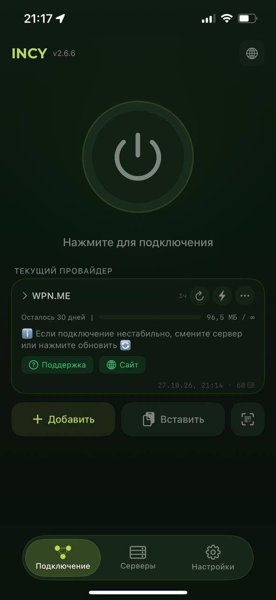
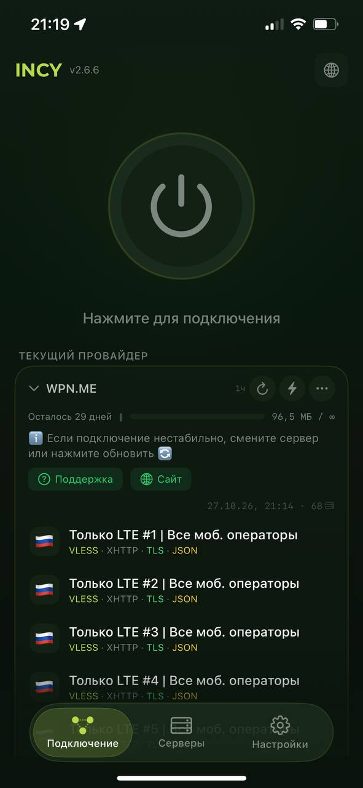
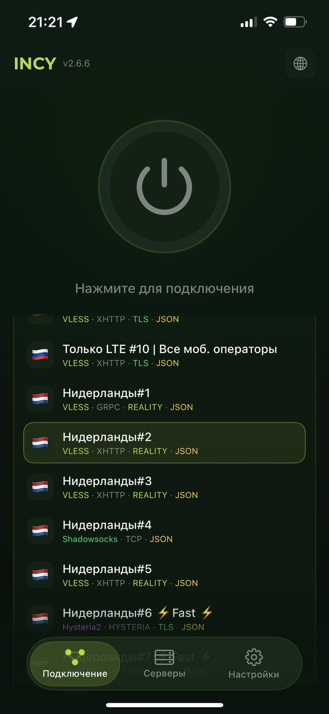
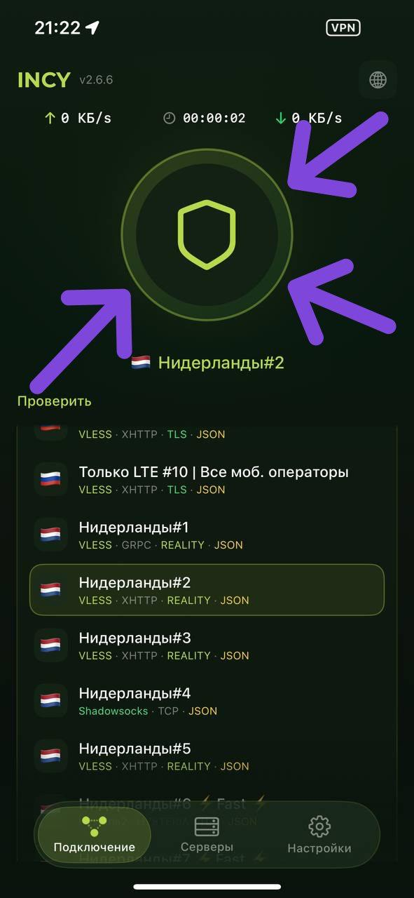

Как подключить VPN
пошагово
Делайте по одному шагу и не торопитесь. Если что-то не получается — напишите или позвоните Вите, он поможет.
Скачайте приложение
Приложение называется INCY. Нажмите на кнопку для вашего телефона:
Скачать для iPhoneоткроется App Store Скачать для Androidоткроется Google PlayВ магазине нажмите Установить (или Загрузить) и дождитесь, пока приложение скачается.
Запустите приложение
Откройте INCY. Если приложение что-то спрашивает — нажимайте Продолжить, пока не увидите такой экран:

Вот такой экран должен получиться
Нажмите «+ Добавить»
В нижней части экрана найдите кнопку + Добавить (на картинке показана стрелками) и нажмите на неё.

После этого снизу появятся поля для ввода, как на этой картинке:

Попросите ссылку у Вити
Напишите или позвоните Вите и попросите прислать ссылку для подключения.
Дальше возвращайтесь к этой инструкции.
Вставьте ссылку
Когда Витя пришлёт ссылку:
- Нажмите на ссылку пальцем и подержите, пока не появится меню.
- Выберите Копировать.
- Вернитесь в приложение INCY и нажмите на верхнее поле (на картинке показано стрелками).
- Нажмите на поле ещё раз и выберите Вставить.

Нажмите зелёную кнопку
После вставки ссылки ниже появится зелёная кнопка «Добавить провайдера» (на картинке показана стрелками). Нажмите на неё.

Подождите немного
Через несколько секунд на главном экране появится надпись WPN.ME. Должно получиться примерно вот так:

Откройте список серверов
Нажмите на прямоугольник с надписью WPN.ME. Откроется список. В нём будут непонятные слова и флаги — это нормально, не пугайтесь.

Выберите «Нидерланды»
Листайте список пальцем вверх (вниз по списку), пока не увидите Нидерланды#1, Нидерланды#2, Нидерланды#3.
Нажмите на любой из трёх. Выбранный сервер подсветится.

Здесь выбраны «Нидерланды#2»
Включите VPN
Нажмите на большую круглую кнопку вверху экрана. Через несколько секунд она загорится зелёным и появится салатовый щит.

Как выключить VPN
Нажмите на большую круглую кнопку ещё раз.
Как включить в следующий раз
Настраивать заново не нужно. Просто откройте приложение INCY и нажмите на большую круглую кнопку.
Если плохо работает
Вернитесь к шагу 9 и выберите другой сервер: другие «Нидерланды» или даже другую страну (например, Германию или Финляндию).
Всё равно не получается? Напишите или позвоните Вите.